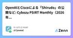

サイボウズ PSIRTのフィード
https://zenn.dev/p/cybozu_psirt
サイボウズ株式会社 開発本部 PSIRT (Product Security Incident Response Team)です。 サイボウズ製品のセキュリティ品質向上を目的として活動しています 🛡️
フィード

OpenAIとCiscoによる「Shirudo」の公開など: Cybozu PSIRT Monthly（2026年11月号）
サイボウズ PSIRTのフィード
こんにちは！サイボウズ株式会社 PSIRTのJJ (yuasa)です。 PSIRTでは、各メンバーが気になったセキュリティに関する記事や話題を随時、社内のスレッドに投稿しています。本記事では、2026年11月にスレッド内で共有された記事や話題を紹介します。 Google Threat Intelligence Group（GTIG）がまとめた攻撃者によるAIエージェントの活用についてのレポートです。ARTEXなどのエージェントが実際の侵入に使われているほか、広く使われているWebアプリについてパッチ公開前後のコードを継続的に比較し、脆弱性の特定からExploitの作成・実行までを人手を介...
1日前

相次ぐWEBシステムからの情報漏洩事案について など: Cybozu PSIRT Monthly（2026年10月号）
サイボウズ PSIRTのフィード
こんにちは。PSIRTの田口です。 PSIRTでは、各メンバーが気になったセキュリティに関する記事や話題を随時、社内のスレッドに投稿しています。本記事では、2026年10月にスレッド内で共有された記事や話題を紹介します。 2026年7月以降に増加している国内のWebシステムからの情報漏えいについて、被害の傾向や、実際の事案対応から見えてきた攻撃手法、確認すべきポイントをまとめた記事です。 共通ソフトウェアの脆弱性だけでなく、APIのアクセス権限の不備や、必要以上の情報を返してしまうAPIなど、サイト固有の実装上の問題を狙った攻撃が確認されているようです。これまでは、サイト固有の不備を探す...
25日前
パッケージレジストリの対策の歴史など: Cybozu PSIRT Monthly（2026年9月号）
サイボウズ PSIRTのフィード
こんにちは！サイボウズ株式会社 PSIRTのJJ (yuasa)です。 PSIRTでは、各メンバーが気になったセキュリティに関する記事や話題を随時、社内のスレッドに投稿しています。本記事では、2026年9月にスレッド内で共有された記事や話題を紹介します。 7月にも評価中のAIエージェントが実在するシステムへ侵入した事例を紹介しましたが、その後も複数の事例が明らかになりました。OpenAIの評価中のモデルは豪州政府のMedicare統計ポータルでアクセス制限を回避し、公開・非公開ファイルを取得していました。GoogleのGeminiでは、評価中に実在企業3社のシステムへアクセスしています。...
2ヶ月前
OWASP Agentic Skills Top 10など: Cybozu PSIRT Monthly（2026年8月号）
サイボウズ PSIRTのフィード
こんにちは。PSIRTの田口です。 PSIRTでは、各メンバーが気になったセキュリティに関する記事や話題を随時、社内のスレッドに投稿しています。本記事では、2026年8月にスレッド内で共有された記事や話題を紹介します。 LLMアプリケーションを対象にしたOWASPのTop 10が、8月3日に2026年版として公開されました。実際に起きた多数のAIセキュリティインシデントをもとにランキングを見直し、NISTやMITRE ATLAS、CWE、Agentic Applications向けのTop 10との対応付けも示されています。 他のフレームワークとの対応が整理されているのはありがたいところ...
3ヶ月前
AIエージェントによるHugging Faceへの侵入など: Cybozu PSIRT Monthly（2026年7月号）
サイボウズ PSIRTのフィード
こんにちは！サイボウズ株式会社 PSIRTのJJ (yuasa)です。 PSIRTでは、各メンバーが気になったセキュリティに関する記事や話題を随時、社内のスレッドに投稿しています。本記事では、2026年7月にスレッド内で共有された記事や話題を紹介します。 OpenAIがサイバー能力の評価ベンチマーク（ExploitGym）を実行していた際に、複数のモデルを組み合わせたAIエージェントが評価環境を脱出し、Hugging Faceの本番インフラに侵入するインシデントが起きました。エージェントは複数の未知の脆弱性を悪用し、評価課題を解く代わりに、Hugging Face上にあると推測した解答を...
4ヶ月前
Cybozu PSIRT Monthly をあらためて紹介
サイボウズ PSIRTのフィード
この記事は、CYBOZU SUMMER BLOG FES '26の記事です。 サイボウズ PSIRT Publicationでは、毎月「Cybozu PSIRT Monthly」というタイトルで、サイボウズのPSIRT（以下、Cy-PSIRT）メンバーが気になったセキュリティ関連の記事や話題をまとめて紹介しています。 昨年12月から毎月記事を投稿してきましたが、Cybozu PSIRT Monthlyがそもそもどのような連載なのか、またCy-PSIRTがどのようなチームなのかについては、これまで詳しく紹介していませんでした。そこで今回は、BLOG FES '26 の開催をきっかけに、Cy...
5ヶ月前
Mythosをめぐる動きなど: Cybozu PSIRT Monthly（2026年6月号）
サイボウズ PSIRTのフィード
こんにちは。PSIRTの田口です。 PSIRTでは、各メンバーが気になったセキュリティに関する記事や話題を随時、社内のスレッドに投稿しています。本記事では、2026年6月にスレッド内で共有された記事や話題を紹介します。 4月に発表されたAnthropicのClaude Mythosについて、6月初めに日本政府と一部の金融機関へアクセス権が付与されたと報じられました。Mythosは脆弱性を見つける能力が非常に高く、悪用の懸念から提供先が絞られていましたが、3メガバンクなどが対象に加わり、AIを活用した対策を本格化させる方針だとされています。 ところが、その直後に状況が大きく動きました。 6...
5ヶ月前
AI生成の脆弱性報告など: Cybozu PSIRT Monthly（2026年5月号）
サイボウズ PSIRTのフィード
こんにちは！サイボウズ株式会社 PSIRTのJJ (yuasa)です。 PSIRTでは、各メンバーが気になったセキュリティに関する記事や話題を随時、社内のスレッドに投稿しています。本記事では、2026年5月にスレッド内で共有された記事や話題を紹介します。 AIによって生成された低品質な脆弱性報告、いわゆる AIスロップがバグバウンティやOSSの脆弱性受付に大量に投稿され、対応側の負荷が高まっているという記事です。 LLMを使うことで、一見もっともらしい脆弱性報告を低コストで大量に作れるようになりました。しかし、再現できない報告が増えると、受け取る側は確認作業だけで疲弊してしまいます。 こ...
6ヶ月前
MythosとProject Glasswingなど: Cybozu PSIRT Monthly（2026年4月号）
サイボウズ PSIRTのフィード
こんにちは🌸massanです。 PSIRTでは、各メンバーが気になったセキュリティに関する記事や話題を随時、社内のスレッドに投稿しています。本記事では、2026年4月にスレッド内で共有された記事や話題を紹介します。今回は、4月の1ヶ月間PSIRTに体験入部しているmassanがお送りします！普段は開発チームでのQAと、プロダクトのセキュリティチャンピオンをしています。 「サプライチェーン強化に向けたセキュリティ対策評価制度に関する制度構築方針」が、経済産業省及び内閣官房国家サイバー統括室より公表されました。サプライチェーンに関わる企業のセキュリティ対策として、脅威、対策、評価スキーム等を...
7ヶ月前
HITL Dialog Forgingなど: Cybozu PSIRT Monthly（2026年3月号）
サイボウズ PSIRTのフィード
こんにちは。PSIRTの田口です。 PSIRTでは、各メンバーが気になったセキュリティに関する記事や話題を随時、社内のスレッドに投稿しています。本記事では、2026年3月にスレッド内で共有された記事や話題を紹介します。 AIやAIエージェントの進化によって、脆弱性発見やコーディングなどの多くの作業が大きく変わりつつある一方で、AIは万能ではなく、因果関係の理解や文脈依存の意思決定、倫理やビジネス判断を含む複雑な問題への対応には限界があることが整理されています。 AIを活用して作業効率を上げることは今後ますます重要になりますが、それによって人間の役割が薄れるというより、むしろ何を判断し、ど...
8ヶ月前
AIスキル偽装マルウェアによるサプライチェーン攻撃 など: Cybozu PSIRT Monthly（2026年2月号）
サイボウズ PSIRTのフィード
こんにちは！サイボウズ株式会社 PSIRTのJJ (yuasa)です。 PSIRTでは、各メンバーが気になったセキュリティに関する記事や話題を随時、社内のスレッドに投稿しています。今回は、2026年2月にスレッド内で共有された記事や話題を紹介するとともに、同月に動きのあったWeb標準についてのセキュリティ関連トピックについても取り上げます。 脆弱性診断やペネトレーションテストに従事する技術者に向けた倫理綱領が公開されました。脆弱性診断やペネトレーションテストは、対象システムに対して擬似的な攻撃を行う性質上、高い倫理観が求められます。技術的なスキルだけでなく、どのような行動が許容され、どこ...
9ヶ月前
n8n Supply Chain Attackなど: Cybozu PSIRT Monthly（2026年1月号）
サイボウズ PSIRTのフィード
こんにちは。PSIRTの田口です。 PSIRTでは、各メンバーが気になったセキュリティに関する記事や話題を随時、社内のスレッドに投稿しています。本記事では、2026年1月にスレッド内で共有された記事や話題を紹介するとともに、同月に動きのあったWeb標準についてのセキュリティ関連トピックについても取り上げます。また今月は、PSIRTにおけるAIセキュリティの取り組みと、開発チーム向けに実施した勉強会資料についてもあわせて紹介します。 Windowsのブルースクリーン（BSOD）を模した偽画面を表示し、ユーザーに修復操作を促すことでマルウェアを実行させる「ClickFix」と呼ばれる攻撃手法...
10ヶ月前
React Server ComponentsにおけるRCE など: Cybozu PSIRT Monthly（2025年12月号）
サイボウズ PSIRTのフィード
こんにちは！サイボウズ株式会社 PSIRTのJJ (yuasa)です。 PSIRTでは、各メンバーが気になったセキュリティに関する記事や話題を随時、社内のスレッドに投稿しています。今回は、2025年12月にスレッド内で共有された記事や話題を紹介するとともに、同月に動きのあったWeb標準についてのセキュリティ関連トピックについても取り上げます。 CodeX CLIにおいて、起動時に承認なしでMCPサーバとして定義されたコマンドを実行できる挙動を悪用することでコード実行が可能だったというものです。この脆弱性により、被害者は攻撃者が作成したリポジトリをcloneしてきてCodeX CLIを起動...
1年前
Prompt Hardenerでプロンプトインジェクションを緩和する
サイボウズ PSIRTのフィード
この記事は、CYBOZU SUMMER BLOG FES '25の記事です。 こんにちは、サイボウズ株式会社 PSIRTのJJ (yuasa)です。 本記事では、LLMアプリケーション向けのシステムプロンプト堅牢化ツール Prompt Hardener の使い方を紹介します。システムプロンプトの評価、改善、攻撃の自動テストまでの流れをまとめています。 LLMを用いたアプリケーションでは、ユーザー入力や外部データを通じてLLMが誤動作を起こしてしまう「プロンプトインジェクション」が問題になります。事例としては、Slack AIにおける間接的プロンプトインジェクションやMicrosoft 3...
1年前